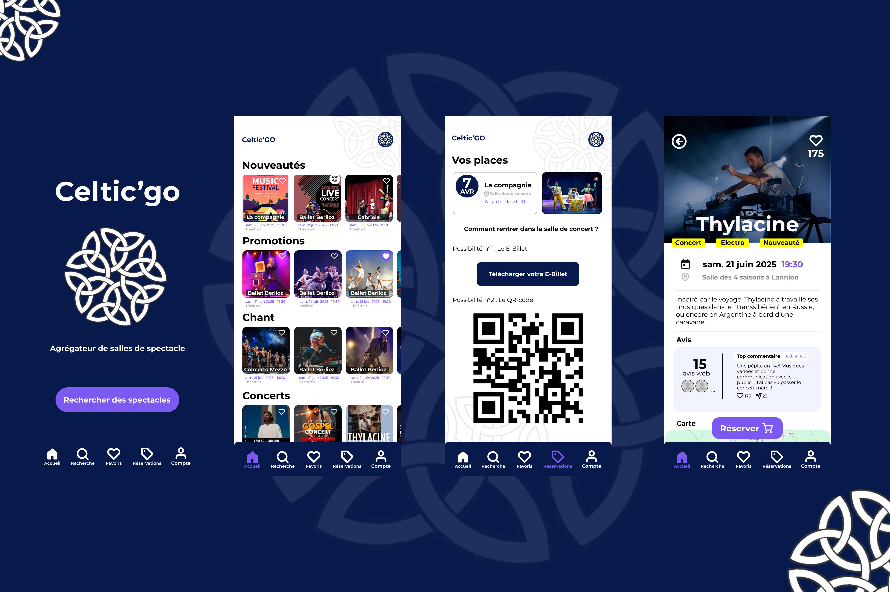
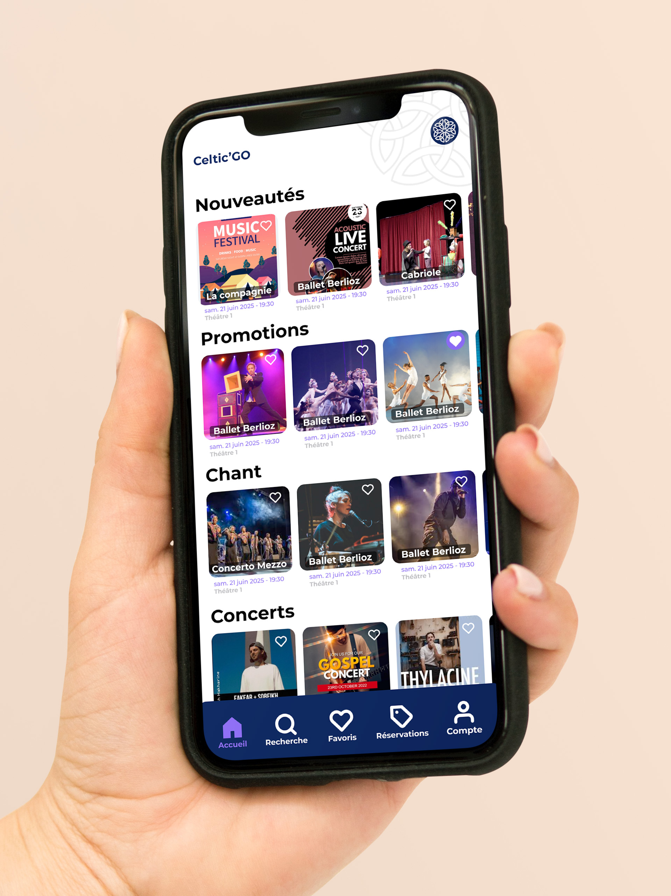
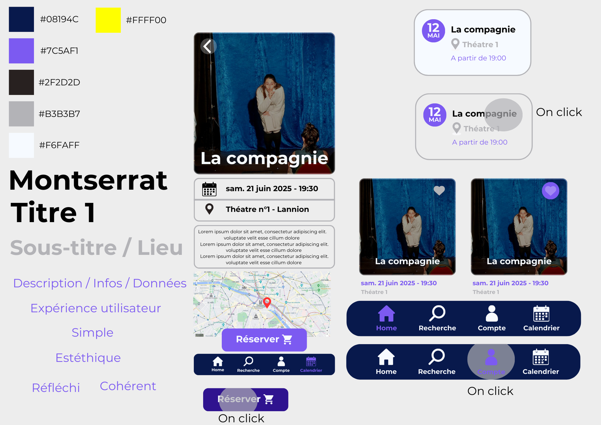
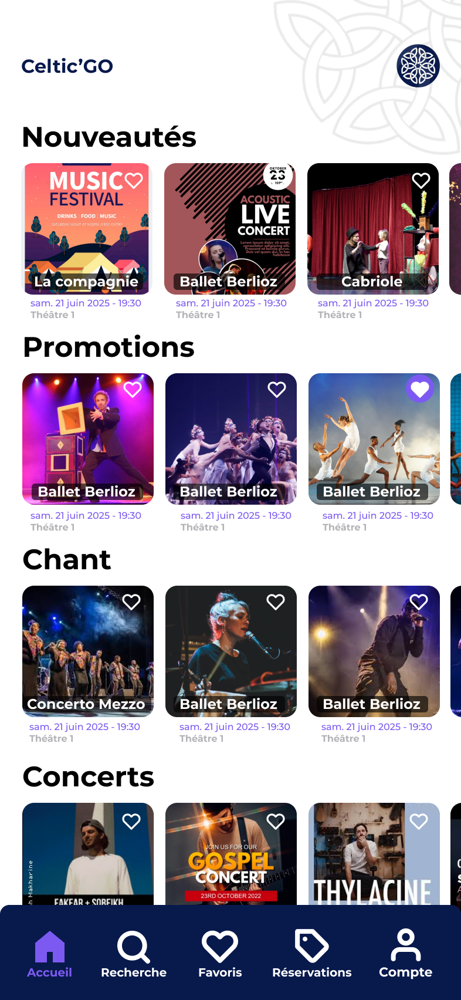
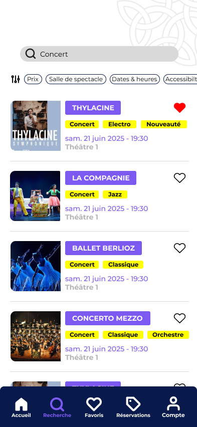
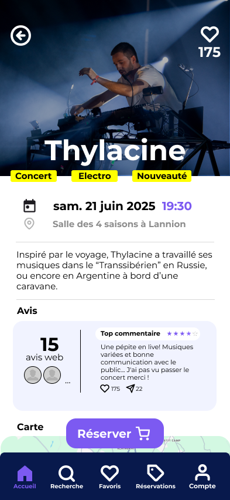
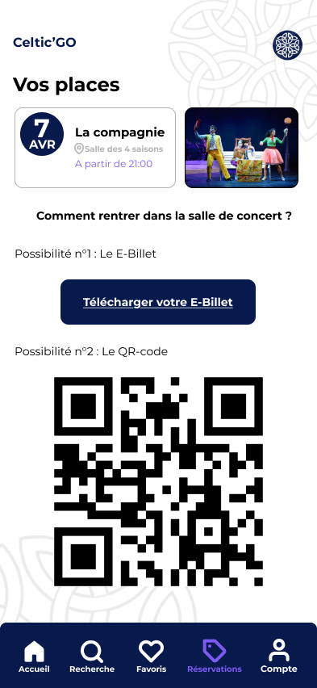

Celtic'GO
Application mobile · BUT MMI · IUT de Lannion
- 2024 — 2025
- UX / UI Design
- Mobile first
- Wireframe
- Maquette
- Benchmark
- Figma
- Illustrator
- Photoshop
développer l'accès à la culture
Dans une volonté de relancer la dynamique culturelle sur ses territoires, Lannion Trégor Communauté souhaite développer l’accès aux sorties culturelles pour les habitants des communes.
Celtic'GO est né de cette volonté. C'est un agrégateur des 5 salles culturelles présentent dans le Trégor, regroupant les offres culturelles sur une seule et même application.

Objectif de résultat
L'ambition principale est de faciliter l'accès à la culture en simplifiant la recherche de spectacles et l'achat de billets. Cette démarche vise à augmenter la fréquentation des salles de spectacle locales. Concrètement, Celtic'GO propose un service numérique adapté aux usages d'aujourd'hui, tournés vers l'immédiateté et la mobilité.

Travail réalisé
Le projet s'est concrétisé par une maquette haute fidélité d'une WebApp "Mobile-First", alliant une identité visuelle moderne à une ergonomie pensée pour une navigation facile à une main. Le cœur de cette plateforme repose sur un agrégateur qui centralise les agendas des cinq principales salles de la région. Pour garantir un parcours fluide de la découverte à l'achat, l'outil intègre un moteur de recherche précis (filtrant par date, lieu, genre et budget), associé à un tunnel de réservation optimisé pour valider ses billets en un minimum de clics.




Compétences mobilisées
- Autonomie
- Travail d'équipe
- Adaptabilité
- Interface mobile
- UX / UI Design